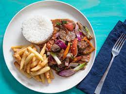

Peruvian Lomo Saltado

Description
This is a traditional peruvian dish, really easy to make and really delicious (4 servings)
Greatly inspired by the asiatic inmigration in the country, this plate has developed as one of the most traditional and common dishes in the country.
Ingredients
- 16 ounces of frozen fries
- vegetable oil as needed
- 1 pound of sliced beef tri tip
- 1 large onion sliced to strips
- 3 large tomatoes sliced into strips
- 1 yellow chili pepper (preferably Peruvian aji amarillo)
- 1/4 cup of distilled white vinegar
- 1 dash soy sauce
- 1 tablespoon of oyster sauce
- 2 tablespoons of chopped fresh parsley
Steps
- Prepare the fries according to the package directions.
- Heat the oil in a frying pan over medium-high heat. Season the sliced meat with salt and pepper to taste. Fry the meat until just cooked, when the juices begin to release. Then remove the meat.
- Cook the onions in the frying pan with additional oil if needed, until they are transparent. Stir in the tomato and aji amarillo, then cook until the tomato softens.
- Add the meat again, pour the vinegar, the soy sauce and the oyster sauce, add the fries, mix and cover until the beef is done (about 3 minutes). Sprinkle chopped parsley to serve.